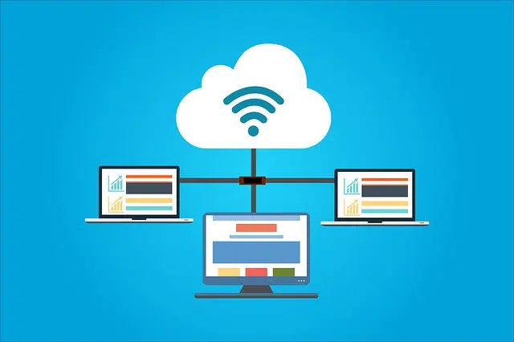
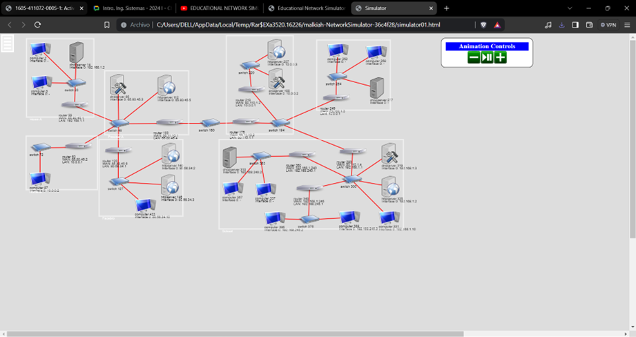

Una red es un sistema de dispositivos interconectados que pueden compartir recursos e información. Los dispositivos pueden ser computadoras, impresoras, teléfonos inteligentes, tabletas y otros dispositivos electrónicos. Las redes están conectadas mediante cables o señales inalámbricas. Las redes permiten a los usuarios compartir archivos, acceder a Internet, comunicarse entre sí y más. Una red puede ser tan simple como dos computadoras interconectadas o tan compleja como una red global que conecta millones de dispositivos. Las redes se utilizan en una variedad de entornos, incluidos hogares, escuelas, empresas y agencias gubernamentales.
Existen muchos tipos de redes, cada una con su propio propósito y características. Los tipos de redes más comunes son:
Red de área local (LAN): Conecta dispositivos en un área pequeña, como una casa o una oficina.
Red de área metropolitana (MAN): Los dispositivos están conectados a un área más grande, como una ciudad o región.
Red de área amplia (WAN): Conecta dispositivos en un área grande, como un país o el mundo.
Redes inalámbricas: Utilizan señales inalámbricas o infrarrojas para conectar dispositivos sin cables.
Redes punto a punto (P2P): Permite que los dispositivos compartan recursos entre sí sin la necesidad de un servidor central.
El tipo de red utilizada depende de sus necesidades específicas. Por ejemplo, una LAN es buena para compartir archivos e impresoras en casa, mientras que se necesita una WAN para conectar sucursales de la empresa en diferentes ciudades. Las redes inalámbricas están ganando popularidad debido a su conveniencia y flexibilidad. Las redes P2P se suelen utilizar para compartir archivos grandes, como música y vídeos.
Una red tiene varios componentes clave para que funcione, entre ellos:
Dispositivo: Un dispositivo que se conecta a una red, como una computadora, una impresora, un teléfono inteligente o una tableta.
Medios de red: Cables o señales inalámbricas que conectan dispositivos entre sí.
Dispositivos de red: Dispositivos que ayudan a enrutar y administrar el tráfico de red, como conmutadores, enrutadores y firewalls.
Software de red: Software que permite que los dispositivos se comuniquen entre sí y compartan recursos como sistemas operativos de red y aplicaciones de red.
Este es un simulador desarrollado en GitHub por el desarrollador Malkiah.
El objetivo de este proyecto es proporcionar un simulador para escuelas secundarias donde los estudiantes puedan practicar y comprender los siguientes conceptos, entre otros:
Componentes básicos de la red: hosts (clientes y servidores), enrutadores y conmutadores
Direcciones IP y subred máscaras
Puertas de enlace Unicast / Broadcast
Concepto de protocolo
Comandos básicos de red: ping, traceroute
Direcciones IP estáticas/dinámicas/DHCP" Modo puerta de enlace" frente "modo enrutador" en enrutadores
NATServidores : DNS, HTTP, DHCP.
Aunque no sea el simulador mas realista, gracias a este es posible comprender los conceptos básicos de una red, y así poder aplicarlos de la manera correcta en la vida real.
(Vista previa que nos da el simulador al abrir el archivo "simulator01.html", en la carpeta que extraimos al descargar el simulador)
La creación de redes ha cambiado la forma en que vivimos y trabajamos. Esto nos ha permitido conectarnos con personas de todo el mundo, compartir información y acceder a recursos que nunca antes fueron posibles. Las redes están en constante evolución y proporcionan nuevas formas de comunicación.
This site was created with the Nicepage